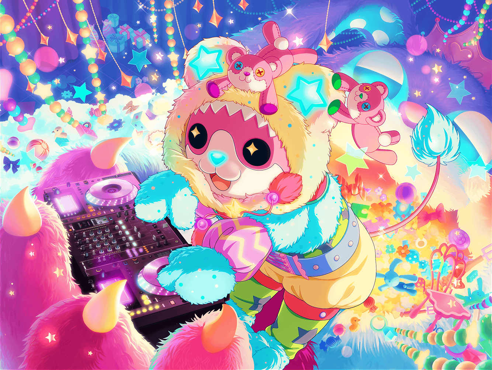

川沿いの道
美咲
あ……
どうも、こんにちは
まりな
美咲ちゃん！
偶然だねー、どこか行くの？
美咲
いえ、特にどこか行くわけじゃなくて。
考えごとしながらの散歩って感じです
まりな
私達は買い出しだよ。
……考えごと、って何かあった？
美咲
そんな深刻じゃないんですけどね。
……この前の『ふわキャラ選手権』のことを
考えてました
美咲
あ、ふわキャラ選手権ってわかりますか？
なんか、ふわキャラ達が集まって勝負して、っていう……
こうやって説明すると、なんだかシュールですけど
まりな
もちろん！ あれって確か、最後は投票なんだよね？
勝負を通してアピールして……って感じで
美咲
そうそう、それです
美咲
この地域からはミッシェルしか出ないっていうから
参加することにしたのに、まさかのライバル登場ですからね
美咲
相手のマリー・アンドロメダってキグルミ、
本当にすごかったんですよ。
足は速いわ、ジャンプはするわの万能っぷりで
美咲
……２人ならなんとなく察しがつくかもですけど、
そのマリーってキグルミの中身、はぐみだったんですよね〜。
どっかで見た動きだなと思ったら、案の定でした
美咲
なんか、はぐみも頼まれて出たみたいなんですけど、
とにかく最初っから本気ーって感じだったし、
正直かなり焦っちゃいました
美咲
あたしが出たのは走り幅跳びと社交ダンス、風船配り……
それからマラソンだったんですけど、全部の勝負で
苦戦させられましたよ
美咲
まあ、最終的にはどっちが優勝とかじゃなく、
２人で商店街を盛り上げていくってことで
落ち着いたんですけど
まりな
そうだったんだ。
おめでとう……って言っていいのかな？
美咲
はい……でも、素直に喜べないというか
なんというか……
美咲
実は最後のマラソンであたし、
１回諦めかけちゃったんですよね。ちょうどこの辺で。
もう勝てないだろうし、いいかなって
美咲
でも、はぐみに怒られてハッとしました。
諦めちゃダメだ、正々堂々真剣勝負が大事だ、って……
それって、前にあたしがはぐみに言った言葉なんですよね
美咲
それで、なにやってんだろーって思っちゃって……
そんなこと考えてたからでしょうね。
ここ、来たの
まりな
そっか。
それだけ、美咲ちゃんの言葉が
はぐみちゃんに響いてたってことだね
美咲
あはは、どうですかねー
美咲
……はぐみってほんとすごいんですよ。
どこまでもまっすぐで、芯があるっていうか、
芯しかないっていうか……
美咲
そういう素直なとこ、
ちょっと見習っていきたいなって思ってます
まりな
うんうん、わかるわかる。
でもはぐみちゃんだけじゃなくて、他の子にも言えるよね
もちろん、美咲ちゃんにも
美咲
まりなさん……{{userName}}さん
なんか、ありがとうございます
美咲
……確かにそうですよね。
芯がなければ、バンド活動ってしていられないですし
美咲
……でもま、はぐみの芯の強さは
とびぬけてるんですよねー
美咲
さすがに、あそこまでになれるとは思いませんけど……あはは
美咲
……あの、買い物に行く途中だったのにすみません。
話聞いてもらって、なんだかスッキリしました
美咲
こういうのって、なかなか人には……
特にメンバーとかには言えませんし。
ありがとうございます
美咲
それじゃあ、あたしはそろそろ帰りますね。
また、スタジオでお世話になります
美咲
あ、その時は今日の話、はぐみにはしないでくださいよ？
お願いしまーす